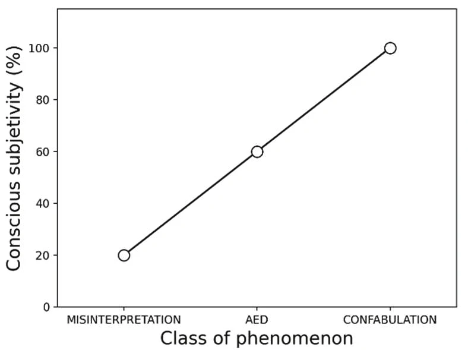

[Exergue : trois vers des paroles de la chanson Some Enchanted Evening, non reproduits ici] Oscar Hammerstein “Some Enchanted Evening,” South Pacific,
Le , neuf objets en forme d'assiette à tarte… coupée en deux avec un… triangle
convexe à l'arrière
https://pulp.hypotheses.org/1180 furent aperçus depuis un avion privé par l'homme
d'affaires Kenneth Arnold dans l'État de Washington, aux États-Unis. La presse forgea le terme de « soucoupe volante », qui s'accompagna d'une énorme couverture
journalistique, donnant lieu à une avalanche de signalements d'objets décrits purement comme des soucoupes ou des
disques, contrairement à ce qu'Arnold avait décrit au renseignement de l'Armée de l'air. La suite appartient à
l'histoire.
L'épidémie de type panique, de courte durée (une « vague » dans le jargon ufologique), qui suivit cette observation fondatrice en Amérique n'était cependant pas isolée dans le temps. Elle avait eu de nombreux antécédents au cours des 50 années précédentes, tant aux États-Unis qu'à l'étranger. Par exemple, le flot de signalements de « dirigeables » de , la peur des « navires fantômes » des années , les avions mystérieux des années , ou l'invasion des « fusées fantômes » de . Il existe une abondante littérature sur ces sujets Vicente-Juan Ballester-Olmos: UFO Waves: An International Bibliography.
Ces observations célestes font partie d'un continuum qui remonte au fil de l'histoire de l'humanité, rempli de phénomènes astronomiques, atmosphériques et optiques pris pour des merveilles et des prodiges en raison de l'ingéniosité, de l'ignorance et des croyances religieuses de la population. Les interprétations mystiques d'événements surprenants et terrifiants dans l'Antiquité se sont combinées aux observations d'ovnis contemporaines pour peindre une tapisserie d'événements qui plaident logiquement contre une origine extraterrestre. Les premières visions de soucoupes volantes se sont matérialisées à partir de peurs cachées de la guerre chez les citoyens américains. Elles furent immédiatement suivies d'innombrables livres populaires, d'une immense attention des médias, de millions d'articles de magazines et de nombreux films qui contribuèrent à bâtir un dossier mondial et contagieux. À l'époque moderne, la perplexité des gens devant des planètes et des étoiles non reconnues, des bolides, des avions et mille autres stimuli potentiels du ciel et de la biosphère, plus l'inévitable quota de canulars, a été lue et interprétée dans un esprit unique : des vaisseaux spatiaux venus d'autres mondes.
Au cours des sept dernières décennies, des millions de personnes ont déclaré avoir vu des soucoupes volantes ou des ovnis (aujourd'hui rebaptisés, de manière politiquement correcte, PAN). Les statistiques les plus fiables, issues d'une base de données contrôlée scientifiquement, estiment que seuls 2 % des signalements d'ovnis restent non identifiés après enquête, mais que ce pourcentage est nul pour tout phénomène défini avec une « forte consistance » https://www.cnes-geipan.fr/fr/actualites/baisse-cas-d.
À partir de , l'absence de preuves physiques vérifiables et anomales pour les manifestations les plus spectaculaires d'un « phénomène », l'impossibilité de retrouver des schémas permanents dans les données sur les ovnis, et la nature extraterrestre contestée de l'immortel « résidu » ovni, ainsi que les recherches en cours, suggèrent une hypothèse psychosociale pour ces phénomènes Thierry Pinvidic (ed.), OVNI. Vers une Anthropologie d’un Mythe Contemporain. Bayeaux (France): Editions Heimdal, . Bref, en ce qui concerne les allégations de rencontres rapprochées avec des ovnis, tout semble se passer dans l'esprit, les incidents allégués formant une légende ou un folklore en cours d'élaboration à l'échelle mondiale.
Si les ufologues « tôle et boulons » (nuts-and-bolts) s'en tiennent toujours à leurs conceptions classiques, d'autres croyants aux ovnis ont en revanche déplacé leurs croyances vers un cadre paraphysique, paranormal et ésotérique, afin de concilier nécessairement l'apparition de prétendus vaisseaux spatiaux et d'entités extraterrestres avec l'absence des preuves physiques requises.
Depuis les travaux pionniers de H. Münsterberg On the Witness Stand. New York: McClure,
jusqu'à Neil deGrasse Tyson,Quel que soit le témoignage oculaire devant un tribunal, c'est la forme de preuve la plus
faible devant le tribunal de la science.
The Amazing Meeting, discours d'ouverture, . la notion de fiabilité des témoins est remise en question. Psychologues, psychiatres et spécialistes
des sciences sociales se sont également engagés dans l'étude des ovnis. Quels phénomènes mentaux pourraient
engendrer des imaginations remarquablement inhabituelles, qui ne soient pas des canulars ? La littérature dans ce
domaine est déjà abondante, citant les illusions visuelles, les rêves lucides, la paralysie du sommeil,
l'épilepsie du lobe temporal, l'imagerie hypnopompique et hypnagogique, la propension à la fantaisie, la
dissociation, les états modifiés de conscience, les faux souvenirs, le stress post-traumatique et les
hallucinations, ainsi qu'un certain nombre de psychopathologies.
En , Newman et Baumeister Leonard S. Newman and Roy F. Baumeister, “Toward an Explanation of the UFO Abduction Phenomenon: Hypnotic Elaboration, Extraterrestrial Sadomasochism, and Spurious Memories,” Psychological Inquiry, Vol. 7, No. 2, , pp. 99-126 ont lancé une discussion visant à proposer des alternatives à la fausse dichotomie « sont-ils fous ou menteurs ? ». C'était une proposition habile, et ce livre tente de poursuivre cette discussion ouverte.
L'acceptation d'une véritable anomalie derrière les observations d'ovnis repose sur le dogme selon lequel le témoignage des témoins est absolument fiable, même si les histoires racontées sont anormales
au regard des critères de la science dominante. Mais c'est loin d'être certain ;
ce n'est qu'une présomption qui correspond aux fantasmes de ses partisans. Les témoins uniques et le manque de
vérification matérielle se situent aux antipodes du fonctionnement de la vie réelle. Non seulement il n'existe pas
de témoins infaillibles, mais l'imagination et les préjugés des gens peuvent leur jouer des tours inoubliables.
Peter Rogerson a un jour évoqué la doctrine habituelle de l'infaillibilité du
témoignage oculaire
Peter Rogerson, “Neither sceptical nor
scientific,” Magonia Review Blog, . L'étude des ovnis nous
place devant un dilemme : incrédulité contre crédulité. La première est un péché véniel (car elle se corrige
d'elle-même face aux preuves). Mais la seconde, qui touche aujourd'hui la plupart des ufologues, est un obstacle majeur au progrès, car comment corriger une croyance
aveugle en ce qui n'existe pas ? C'est tout l'objet de ce livre.
Le cœur du phénomène énoncé ne réside pas dans des enregistrements automatiques ou technologiques (aucune des myriades de photographies, films, vidéos et images numériques n'a de valeur non plus), mais dans le témoignage humain à nu. À notre avis réfléchi, les efforts de recherche futurs doivent se concentrer sur ce matériau brut. C'est la raison d'être de ce travail collectif : explorer les causes et les fonctions de telles chimères visuelles. Mais pas seulement. Comment les anthropologues, les historiens, les philosophes, les physiciens et d'autres chercheurs observent-ils le « phénomène » du signalement d'ovnis ? Ce livre aborde également cette question.
Dans cette conjoncture, le présent livre a pour but de recueillir l'opinion actuelle des spécialistes de l'étude des ovnis et/ou des universitaires sur la valeur et la fiabilité des récits d'ovnis extraordinaires présentés comme vécus dans la réalité. Le projet est de mener une nouvelle enquête à partir d'un éventail plus large de compétences. Nous entendons présenter un état de l'art de l'examen scientifique des récits d'ovnis, principalement mais pas exclusivement du point de vue des sciences sociales.
Notre objectif n'est pas de juger le comportement, l'éthique, la motivation ou l'intention des témoins d'ovnis. Nous essayons seulement d'évaluer la valeur des témoignages de récits étranges lorsque ceux-ci ne s'accordent pas avec des preuves tangibles.
Comme le montre la littérature sur les ovnis, plusieurs milliers de prétendus témoins ne signalent pas de simples lumières dans le ciel, mais jurent avoir rencontré des machines qui s'étaient posées et se trouvaient physiquement proches. Ils s'en souviennent comme d'une expérience vive et réelle : atterrissage d'objets avec des équipages humanoïdes qui, à l'occasion, enlèvent aussi leurs observateurs et pratiquent sur eux des actes médicaux malveillants. L'affirmation selon laquelle ces récits seraient en fait des visites extraterrestres de races étrangères est un faux teatro joué devant nous tous, qui mérite l'intervention urgente d'experts en psychologie, car aucune de ces situations n'a jamais été étayée par des preuves de nature à convaincre la société, et moins encore les scientifiques, qu'elles se sont produites comme rapporté. En somme, quelque chose qui touche des personnes, parfois cruellement, ne peut être laissé entre les mains de charlatans, de gens crédules, de fanatiques et de croyants, d'auteurs sur les ovnis, de sectes ovnis ou de l'industrie du divertissement ovni. C'est un domaine qui relève principalement des sciences sociales.
Si cet ensemble d'« expériences » n'est pas faux et purement fictif, qu'est-ce donc ? Peut-on le classer comme une maladie qui nécessite un traitement ou des soins médicaux ? La littérature indique que plusieurs affections psychologiques engendrent des histoires ou des récits semblables à ceux que nous avons décrits. Mais est-il possible d'établir les facteurs qui produisent ou facilitent cette catégorie d'expérience de rencontre extraterrestre ? Pouvons-nous les énumérer pour aider à définir le problème ?
Le trouble de la rencontre extraterrestre (alien encounter disorder, AED) est une perturbation cognitive non pathologique, brève, non invalidante et non répétitive, caractérisée par la « vision » d'un objet volant surgissant de nulle part, s'approchant du témoin, en vol stationnaire ou se posant à courte distance, avec (éventuellement) des créatures qui en sortent et adoptent un comportement absurde, puis redécollant rapidement au bout de peu de temps. Le prétendu contact peut parfois inclure une communication (mentale ou orale), une interaction physique, un enlèvement ou des sévices. Les caractéristiques récurrentes font défaut en matière de dimensions, de forme, de dynamique, de couleurs, de bruit, d'odeur, d'effets consécutifs, etc. Au contraire, il y a au bout du compte autant de descriptions que d'informateurs, comme autant de cas particuliers d'épisodes sociogéniques individuels.
Les caractéristiques situationnelles et environnementales habituelles qui favorisent et renforcent la survenue perçue de cet événement irréel, mais réel pour le sujet, comprennent une combinaison des configurations suivantes :
Nous sommes convaincus que les rencontres candides décrites avec des extraterrestres en visite sont des expériences délirantes. Celles-ci doivent nécessairement être associées à des déclencheurs communs. Nous présumons qu'outre les conditions factuelles énumérées ci-dessus, certaines conditions psychologiques personnelles ou particulières doivent également concourir. Ces précurseurs doivent être identifiés à des fins de diagnostic.
En général, cet état émotionnel survient puis disparaît pour ne jamais revenir, mais laisse une trace de faux souvenirs durables, sauf dans les allégations d'enlèvement, où un prétendu enlevé peut revendiquer des expériences répétées Kathleen Marden, “The MUFON Experiencer Survey: What it tells us About Contact and the Implications for Humanity’s Future,” in Proceedings of the 2018 MUFON UFO Symposium. Cherry Hill, New Jersey: MUFON, Inc., , p. 151Cela indiquerait que les enlevés souffrent d'un traumatisme psychologique ou psychiatrique auto-créé plus profond que les observateurs d'atterrissages d'ovnis « normaux ».. Quel est le mécanisme en jeu, qui traverse les frontières et les cultures ? La presse, l'édition, le cinéma et la télévision jouent-ils un rôle dans la diffusion de cette iconographie ? Très probablement. Ce type d'épisode cognitif anormal présente des similitudes et des différences avec d'autres processus psychologiques connus. Il s'apparente à un trouble dissociatif. En revanche, il diffère sensiblement de la paralysie du sommeil ou des épisodes de visitation courants au coucher David J. Hufford, The Terror That Comes in the Night. Philadelphia: University of Pennsylvania Press, Andreas Mavromatis, Hypnagogia. The Unique State of Consciousness between Wakefulness and Sleep. London: Routledge & Kegan Paul Ltd., , puisqu'il se manifeste à l'état de veille, à des moments où le sujet est occupé à des activités ordinaires. Il est doté d'un scénario très spécifique et essentiel : l'image de l'arrivée de vaisseaux extraterrestres avec, à l'occasion, des êtres au comportement stupide qui remontent bientôt à bord de leurs vaisseaux célestes avant de disparaître.
À ce jour, la pauvreté de l'examen psychologique des « témoins oculaires » nous empêche de déterminer si un ensemble de certaines conditions, symptômes ou facteurs communs préexistait à ce qui est présenté comme des « observations » valables. Ils doivent être identifiés et mesurés afin d'établir dûment le lien de cause à effet.
L'affection théorique que nous proposons se situe entre les seuils des erreurs d'observation courantes et des fraudes et canulars conscients. Elle comporte une part de « créativité » qui peut se définir comme la conscience qu'a le sujet de l'élaboration d'une réalité virtuelle et irréelle. Si l'on évalue la valeur de cette créativité dans le processus mental d'une personne, les simples méprises se situent bien en dessous de l'AED, tandis que les confabulations complexes se situent bien au-dessus. On pourrait l'illustrer ainsi :
Méprise < AED < Confabulation

Une justification s'impose peut-être : des maladies rares peuvent ne toucher que quelques centaines de personnes dans le monde, et pourtant ces syndromes ont un nom. Distinct des visions paranormales génériques, et même du stéréotype de la plupart des observations d'ovnis (des lumières d'aspect étrange dans le ciel), nous estimons que l'ensemble des rencontres rapprochées avec des ovnis représente de 104 à 105 cas sur la carte géographique et linguistique du monde.
Les professionnels de la santé mentale pourraient y reconnaître un nouveau type de trouble dissociatif, une nouvelle catégorie de faux souvenir ou d'autres affections. Mais celle-ci présente des circonstances très spéciales et particulières. Nous laissons aux experts le soin de la caractériser comme il convient. Notre seule ambition ici est essentiellement de mettre en évidence un phénomène très précis et particulier, qui doit être abordé sur le terrain psychologique.
Ce trouble, par lequel certaines personnes « vivent » l'atterrissage d'un vaisseau spatial extraterrestre, qui comporte même parfois des manifestations extrêmes comme un enlèvement, laisse une profonde empreinte chez l'« observateur », qui présente aussi parfois des symptômes de peur ou d'anxiété. Si les rencontres rapprochées les plus spectaculaires, comme les enlèvements, reposaient sur un trouble mental léger ou grave préexistant, une dissonance cognitive, une situation de stress, etc., cela expliquerait le syndrome de stress post-traumatique apparemment constaté chez certains sujets. Ce n'est pas une rencontre en face à face avec des extraterrestres qui l'a provoqué. C'est l'état d'esprit antérieur du sujet qui a engendré l'expérience effrayante imaginée, et non un quelconque enlèvement réel. Sur ce point, nous souhaitons également signaler que l'impact du mensonge sur l'ensemble des témoignages et récits extraordinaires ne doit pas être négligé.
Il existe une zone grise et complexe qui s'étend des canulars, accompagnés de souvenirs inexacts supplémentaires et d'exagérations, jusqu'à la simple vérité d'événements réels. La création de rencontres rapprochées avec des ovnis peut-elle y trouver son origine ? Du fait de son idiosyncrasie exceptionnelle, distincte et invraisemblable, nous doutons qu'il existe un souvenir d'une vision irréelle qui explique la visite extraterrestre. Elle se rattache indissolublement à la mythologie des soucoupes volantes, qui s'est développée à une époque donnée de l'histoire, dans un environnement culturel et social donné.
S'agissant d'un sujet controversé par définition, des conceptions divergentes sont apparues, comme on pouvait s'y attendre, et la présente compilation reflète en toute transparence la situation actuelle de la recherche sur le témoignage d'ovnis. Nous n'avons pas choisi de produire un volume monolithique. En fait, ce livre rassemble différentes sensibilités : certains auteurs laissent encore la porte ouverte à un éventuel radium dans la pechblende, à un éventuel signal dans le bruit. Ces réflexions ne sont pas à négliger, car elles reflètent une question des plus controversées. À notre avis, la véritable recherche finira par établir la solution nette selon laquelle les ovnis viennent de l'espace intérieur, qu'ils ne sont que des visions venues de l'intérieur. Les éditeurs espèrent que cette « vue d'en haut » apportera suffisamment de données et de connaissances pour faire progresser ce domaine de recherche.
Un commentaire sur la présentation des articles. Nous croyons sincèrement que le fond est bien plus précieux que le style. Dans cet esprit, nous avons laissé aux auteurs une certaine liberté dans la manière de présenter leurs notes de bas de page, leurs références et/ou leur bibliographie. Imposer une uniformité complète pénaliserait inutilement nos contributeurs, surtout dans un domaine où il n'existe pas d'ensemble unique de normes acceptées mondialement. Nous ne pouvons admettre la dictature de l'éditeur-bureaucrate. Cela dit, tous les articles respectent quelques règles minimales de mise en forme et de rédaction établies au préalable, pour le bénéfice du lecteur.
Historiquement (au cours des 75 dernières années), si l'on compare la part des défenseurs de l'origine extraterrestre des ovnis à la réponse sceptique, cette dernière a été infinitésimale, et c'est pourquoi les éditeurs ont délibérément sollicité quelques articles réfutant quelques grandes histoires d'ovnis. Il ne s'agit pas pour autant d'un débat. Nous souhaitons montrer la face cachée du sujet. Dans le monde, les articles sur les ovnis dans la presse généraliste se comptant par millions, on peut probablement estimer le rapport entre points de vue favorables et défavorables à 105 contre 1. Pour les articles plus formels publiés dans des revues ufologiques influentes et des bulletins et magazines thématiques, nous estimerions la part du pour et du contre à 103 contre 1 (un taux de 0,001).
Dans les années , la population mondiale a été soumise à une overdose de documentaires sur les ovnis stimulant la croyance aux extraterrestres sans aucun fondement solide, par pur goût du sensationnel et des frissons. Sur plusieurs chaînes de télévision, des scénaristes bien payés ont inondé les téléspectateurs de films pleins de fantaisie, où des pseudo-enquêteurs submergent un public innocent d'une désinformation de piètre qualité, où chaque épisode de l'histoire devient une légende ovni. Les gens, dépourvus de critères d'évaluation, consomment ces programmes et tendent à développer de faux schémas mentaux et des croyances plus proches des croyances religieuses que des faits scientifiques.
La conséquence en est un excès alarmant de contenus favorables aux ovnis offerts à tout public, profane comme universitaire, malgré le constat accablant que le travail acharné des fanatiques de soucoupes n'a produit aucune preuve matérielle. Au contraire, l'enquête rationnelle menée par des chercheurs d'esprit sceptique a démoli des jalons importants des munitions ovnis les plus réputées réunies par les passionnés, mais elle est généralement ensevelie sous le tumulte de la croyance aux extraterrestres.
Ce livre collectif vise ouvertement à rééquilibrer cette situation, même si des chercheurs soutenant directement ou modérément une origine non conventionnelle des ovnis participent également à ce volume. Cet ouvrage penche vers l'interprétation psychologique des témoignages d'ovnis qui semblent échapper à un caractère prosaïque, dans la lignée des travaux universitaires sur les ovnis, où le rapport du pour au contre serait de 1 à 9 (articles de revues George Eberhart, E-mail to V.J Ballester-Olmos, ) ou de 1 à 5 (pour les thèses et mémoires Paolo Toselli, E-mail to V.J. Ballester-Olmos, ). Des rapports de 9,0 à 5,0 dans l'arène scientifique et universitaire, à l'opposé du 0,001 de la presse amateur.
Il peut être utile d'exposer la méthode suivie pour sélectionner notre liste de contributeurs. Pendant six mois, nous avons mené une revue complète de la littérature et recherché tous les articles connus publiés dans des revues scientifiques et des livres liés directement ou indirectement à la fiabilité des témoins. S'en est suivie une traque épuisante des adresses électroniques des auteurs. Un nombre non négligeable d'entre eux étaient introuvables. Enfin, nous avons adressé un appel à contributions à 348 chercheurs, universitaires et experts, la plupart rattachés à des universités. Nous avons reçu 162 réponses, dont 57 positives. Ces articles correspondent à 60 auteurs différents de 14 nations différentes. L'invitation a été accordée sur la base de travaux de recherche existants dans ce domaine, et non de croyances, de sentiments ou de positions.
Après la remise des articles, nous avons interrogé nos auteurs sur leur position quant à l'existence d'un phénomène ovni en tant qu'entité réelle inconnue de la science actuelle, sur la base de leur longue expérience de recherche et d'étude. Pour ce faire, trois grandes catégories, certes très simples, ont été établies :
Les groupes formés par les auteurs participants ont fourni ces données :
| D | 39 |
|---|---|
| A | 4 |
| NC | 17 |
Les éditeurs espèrent que le présent volume favorisera de nouvelles recherches sur les questions d'observation et d'interprétation des ovnis. Ces recherches nous aideront à mieux comprendre la perception et la cognition, dans les domaines typiques comme atypiques. Nous sommes convaincus que l'« événement ovni » est essentiellement un phénomène psycho-socioculturel, sans aucune réalité physique (hormis la méprise sur des stimuli ordinaires). La conception de ce livre a toutefois été assez ouverte pour prendre en compte des travaux aux points de vue différents ou contraires, pour une perspective plus riche. Nous ne prétendons certainement pas pour autant que tous nos collègues partagent notre jugement ou notre évaluation ; après tout, c'est un domaine de recherche inachevé.
Nous pensons que quelques mots, ou tableaux, sur les auteurs du livre seront des informations que le lecteur appréciera. À cette fin, nous avons établi le décompte suivant des contributeurs par pays et par spécialité professionnelle :
| PAYS | ÉTATS-UNIS | FRANCE | ESPAGNE | ALLEMAGNE | BRÉSIL | ROYAUME-UNI | BELGIQUE |
|---|---|---|---|---|---|---|---|
| NOMBRE | 22 | 9 | 9 | 3 | 3 | 2 | 2 |
| PAYS | ITALIE | CANADA | INDE | MONACO | AUTRICHE | RUSSIE | JAPON |
| NOMBRE | 2 | 2 | 2 | 1 | 1 | 1 | 1 |
| DOMAINE | PSYCHOLOGIE & PSYCHIATRIE | INGÉNIERIE & PHYSIQUE | ÉDUCATION | MATHS & INFORMATIQUE | MÉDECINE | HISTOIRE | ANTHROPOLOGIE |
|---|---|---|---|---|---|---|---|
| NOMBRE | 25 | 9 | 5 | 5 | 3 | 3 | 2 |
| DOMAINE | SOCIOLOGIE | AUTRES SCIENCES SOCIALES | RELIGION | JOURNALISME | ARMÉE | AUTRES | |
| NOMBRE | 1 | 2 | 1 | 1 | 1 | 2 |
Ce livre se divise en sept sections, avec le nombre de chapitres suivant par section :
Cette introduction n'a pas pour objet d'inspecter, d'examiner ou d'évaluer le contenu de ce livre. Nous laissons ce soin à notre sage public. Une observation s'impose toutefois immédiatement : tous les chapitres de la section Études de cas, qui rendent compte d'un véritable travail de terrain (par opposition aux articles théoriques), apportent des résultats négatifs quant à la réalité des histoires rapportées. On se serait plutôt attendu, si des preuves existaient réellement pour étayer d'authentiques récits d'ovnis à haute étrangeté (comme des atterrissages, des enlèvements ou des rencontres avec des humanoïdes), à ce que les chercheurs fournissent massivement des articles sur des événements ovnis extraordinaires à courte distance ne nécessitant aucune interprétation psychologique. Cela ne s'est pas produit. C'est la situation inverse qui est apparue. C'est un fait bien réel qui mérite réflexion.
Avec l'attention et la propagande croissantes autour de l'étude des PAN par le département de
la Défense américain Vicente-Juan Ballester-Olmos, “A Commentary to the 2022 UAP
Act”, des signalements du type de ceux qui étaient nombreux au cours des décennies passées pourraient
réapparaître, en particulier aux États-Unis, où la NASA et l'AIAA
viennent de décider de se pencher sur les anciennes soucoupes volantes, ovnis, désormais PAN. Selon de récents sondages publiés, quatre Américains sur 10 pensent que
les ovnis sont des vaisseaux spatiaux extraterrestres
https://news.gallup.com/poll/350096/americans-believe-ufos.aspx.
Tel est l'impact des livres et documentaires télévisés fantaisistes à grande diffusion. Et cela s'étend. La
tendance est telle que nous pourrions raviver l'engouement pour les ovnis du siècle dernier.
La vie est faite de cycles, et nous revivons actuellement quelque chose que nous considérons comme complètement résolu. Des intérêts relayés par les médias et des obsessions bien enracinées chez quelques politiciens, scientifiques, journalistes et certains personnages du monde du renseignement (pas toujours intelligents) se sont conjugués pour faire resurgir un climat favorable à une nouvelle évaluation du sujet par le gouvernement américain, façon XXIe siècle. Qu'est-ce qui a objectivement changé pour que cela se produise ? Essentiellement, la publicité sensationnaliste accordée à quelques signalements d'observations d'ovnis (pardon, de PAN) par des pilotes de l'US Navy. Rien de si étrange, compte tenu de l'abondance actuelle, en nombre et en types, d'objets volants artificiels dans notre ciel, comme de l'usage de capteurs de détection et d'enregistrement dans les avions modernes, qui nécessitent probablement des essais et une adaptation aux situations non standard.
Par suite de conseils manifestement erronés, biaisés et intéressés, le DoD des États-Unis repart tragiquement de zéro. Tout le savoir-faire acquis au cours des dernières décennies a été jeté. Personne ne semble avoir tiré les leçons de l'expérience passée. Des décennies d'observations majeures d'apparence étrange, résolues après un examen scientifique et technique, ou simplement par le bon sens, sont ignorées. Tout cela est oublié. Nous espérons que les enquêteurs de l'unité de recherche sur les PAN du DoD, l'All-Domain Anomaly Resolution Office (AARO), créé le https://www.defense.gov/News/Releases/Release/Article/3100053/dod-announces-the-establishment-of-the-all-domain-anomaly-resolution-office/, feront honneur à la partie « résolution » de son nom.
Nous encourageons les spécialistes des sciences sociales à mener de futures recherches en interrogeant les personnes qui signalent un AED, afin d'en identifier et d'en distinguer les propriétés définitoires en vue d'établir une stratégie d'approche appropriée. S'il existe un diagnostic des facteurs qui poussent certaines personnes à créer une telle mise en scène, les professionnels doivent le rechercher. Certaines rencontres d'ovnis ont une nature idiopathique parce que ceux qui auraient dû l'étudier correctement (les ufologues) font preuve d'une apophénie sévère, percevant (croyant) des liens significatifs entre des événements totalement sans rapport.
Il peut être inattendu, voire amusant, de découvrir que l'étrangeté maximale posée par les ovnis et les PAN ne se concentre pas dans le V de volant ou le A d'aérien de ces acronymes. Car ce sont les incidents d'ovnis proches du sol et proches de l'observateur qui conduisent à l'allégation d'une origine extraterrestre. Nous estimons la base de données actuelle à environ ~105 signalements dans le monde, dont probablement 10 % de cas d'enlèvement.Cela pourrait être pire. Selon une interprétation d'un sondage Roper de , jusqu'à quatre millions d'Américains affirmeraient avoir été réellement enlevés par des extraterrestres (Susan Blackmore, “Abduction by Aliens or Sleep Paralysis?”). Pour être précis, sur ~6 000 personnes interrogées, 20 ont déclaré avoir été enlevées par des extraterrestres (Peter Brookesmith, “Roper’s Latest Knot: the 1998 Abduction Survey,” Anomalist 8 (), pp. 32-38). Les chiffres seraient aujourd'hui bien plus élevés. Ce pourrait être votre gentil voisin d'à côté. Pourtant, malgré la grande différence de prévalence, la littérature scientifique sur les enlèvements est très abondante (mais assez pauvre en études de cas approfondies). Comme les signalements bruts d'« atterrissage » ou de « rencontre rapprochée » sont bien plus fréquents, nous estimons que ce domaine exige une exploration plus poussée, en orientant l'enquête à la fois sur l'« expérience » et sur la personne qui l'a « vécue », et en menant des travaux théoriques et psychométriques.
Dès le début, l'« ufologie » a mal visé, faute d'écouter les
premiers conseils universitaires : Nous sommes face à un problème qui relève davantage des méthodes du
psychologue que de celles du physicien.
Dès les années , certains chercheurs invitaient aussi les psychologues à participer à ce domaine
de recherche : …l'enquête indirecte sur les nouvelles observations serait menée par deux équipes de terrain,
composées chacune d'un spécialiste des sciences physiques et d'un spécialiste des sciences sociales expérimenté
dans les techniques d'entretien.
Peter Wadhams (Scott Polar
Research Institute, University of Cambridge, United Kingdom), The Journal of UFO Studies, Vol. II, , page 4. http://www.cufos.org/jufos_price.html En vain. Les
ufologues sont obnubilés par des origines interplanétaires ou ultra-dimensionnelles.
Revenons au début et tournons-nous vers l'avenir proche. Comme on l'a vu, il y eut en une vague de ce que l'on appelait alors communément des soucoupes volantes ou des disques volants. Troublée par ce nouveau développement, l'US Air Force commença à étudier ces signalements, pour le meilleur ou pour le pire, et les nomma ovnis. 75 ans ont passé sans aucune preuve irréfutable que les ovnis soient autre chose que des phénomènes triviaux non reconnus (OVI). L'alternative à un phénomène physique n'est pas le subterfuge de la paraphysique, c'est l'inexistence. De fait, les récits de cas inexpliqués sont parallèles à ceux des cas expliqués, c'est-à-dire que, statistiquement et qualitativement, nous ne pouvons distinguer les ovnis des OVI. Nous en arrivons au principe ontologique de l'identité des indiscernables. Pour compléter ce tableau, une solide littérature, des thèses de doctorat Paolo Toselli, “University UFO Theses & Dissertations 1948-2022” et des travaux dans des disciplines comme la psychologie, l'histoire, l'anthropologie, la sociologie ou le folklore ont consolidé une théorie psychosociale rendant compte de la survenue des phénomènes ovnis.
Sur les questions de science et de connaissance, nous ne pouvons être neutres. L'évolution de l'homme est incontestable. La Terre n'est pas plate. Nous sommes allés sur la Lune. Le Covid-19 est une pandémie et les vaccins sont le seul remède. Les éditeurs de ce volume ne cachent pas qu'après de longues années de recherche ininterrompue sur ce sujet, leur position n'est pas favorable à une vie extraterrestre intelligente interagissant avec les Terriens (et encore moins à des humains enlevés par des extraterrestres). Nous soutenons en revanche avec enthousiasme les efforts SETI et CETI. Le binôme ovni = extraterrestre est intenable du point de vue des preuves. Au contraire, tout indique un mouvement psychosocial, un mythe en cours d'élaboration, voire une religion dans certains milieux. Nous sommes convaincus que les rencontres rapprochées et les enlèvements par des ovnis relèvent principalement d'une sous-discipline de la « psychologie anomalistique » (selon l'expression du professeur Chris French).
De notre point de vue, le fait qu'une partie des auteurs participants déclare une position neutre, voire favorable, à l'égard des ovnis en tant que phénomène potentiel d'origine inconnue signifie qu'une recherche supplémentaire substantielle reste nécessaire pour déterminer s'il existe un quelconque fondement pour que des observations d'ovnis inexpliquées soient un phénomène exotique apparenté au plasma, ou, en se concentrant strictement sur les « rencontres rapprochées », si les événements rapportés représentent une sorte de problème neuropsychologique excentrique encore non documenté dans la littérature. Les extraterrestres étant écartés, sans hésitation.
Nous espérons que le présent volume aidera les étudiants actuels des ovnis et PAN en leur apportant les informations essentielles nécessaires pour examiner et évaluer les incidents à courte distance dans une perspective appropriée. Nous espérons ne pas avoir besoin de sept décennies de plus pour régler cette question.
V.J. Ballester-Olmos
avec Richard W. Heiden